Regenerating Native Ecosystems From Seed to Mature Canopy
We design, install, and steward resilient habitats using site-matched regional native ecotypes. From residential pollinator meadows to municipal stormwater wetlands, we build living ecology that endures.
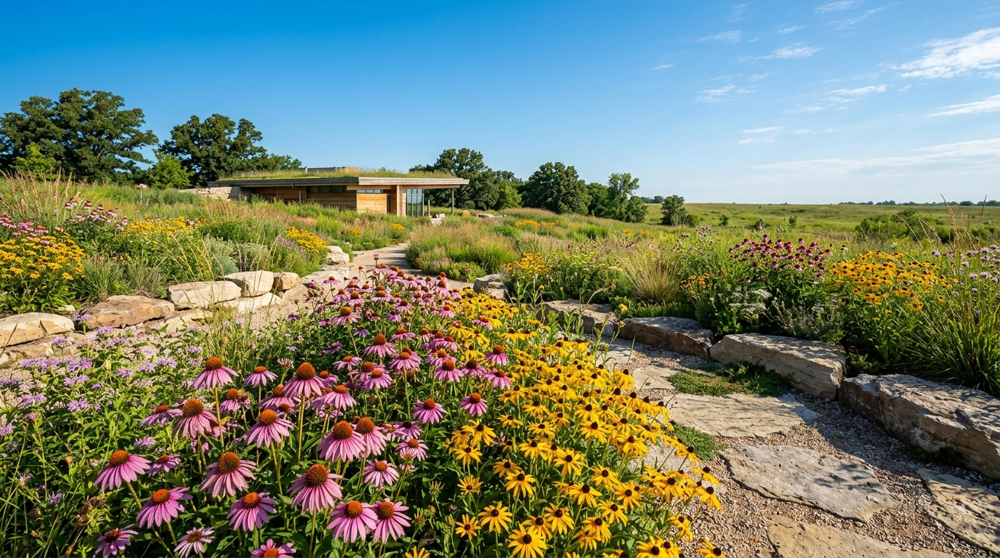
Discover Plants by Region
Explore regional plant communities matched to local bedrock, precipitation patterns, and evolutionary history.
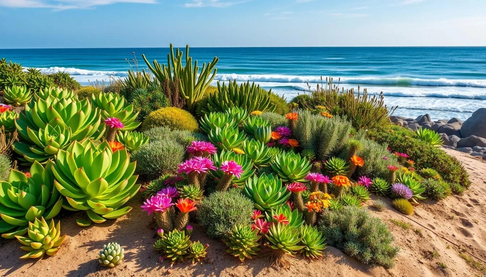
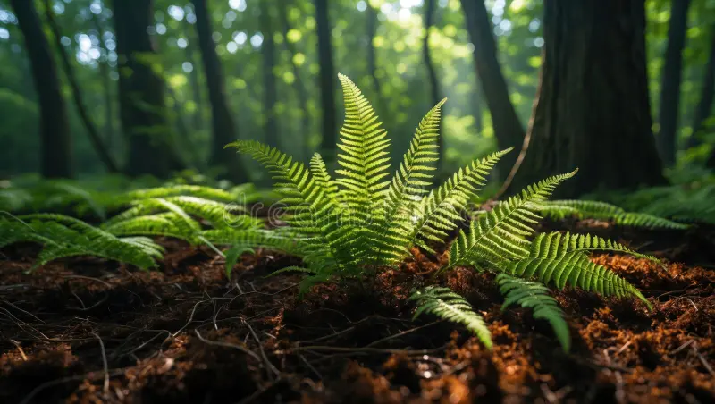
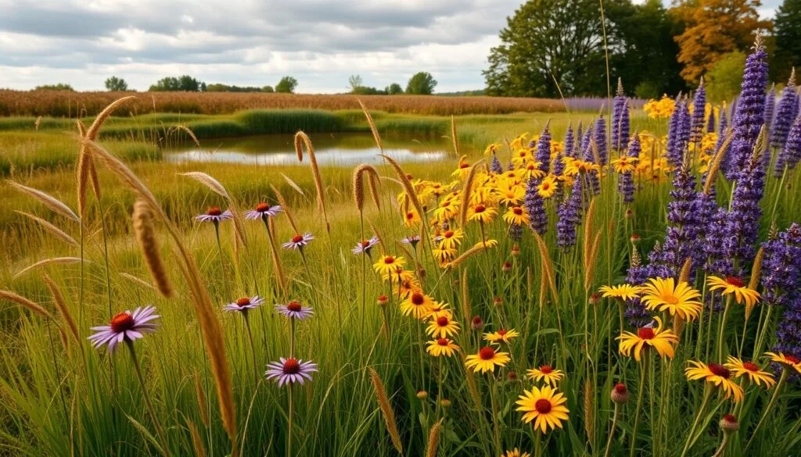
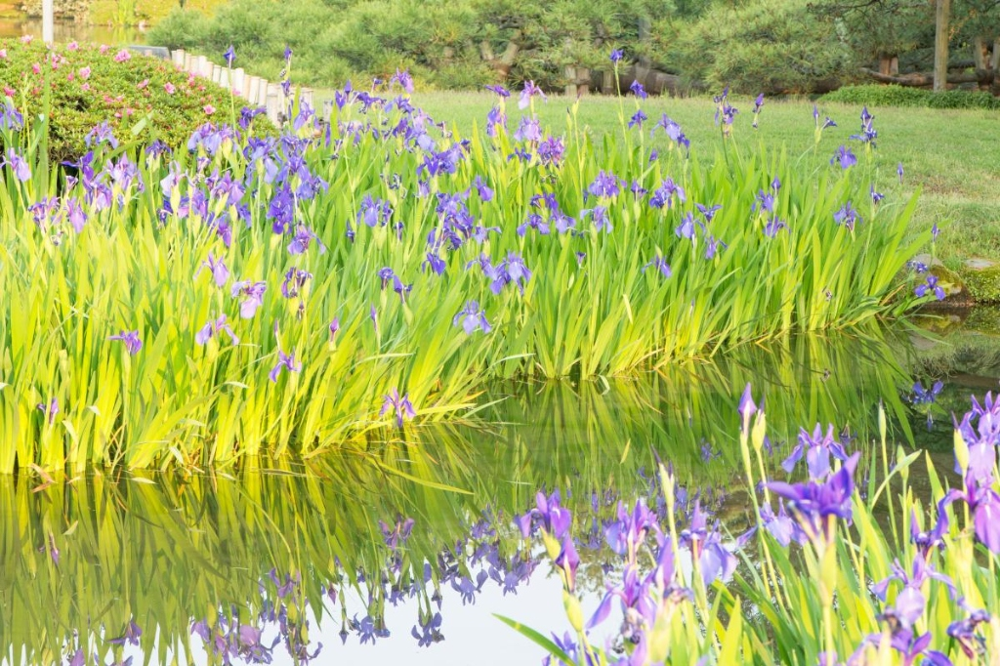
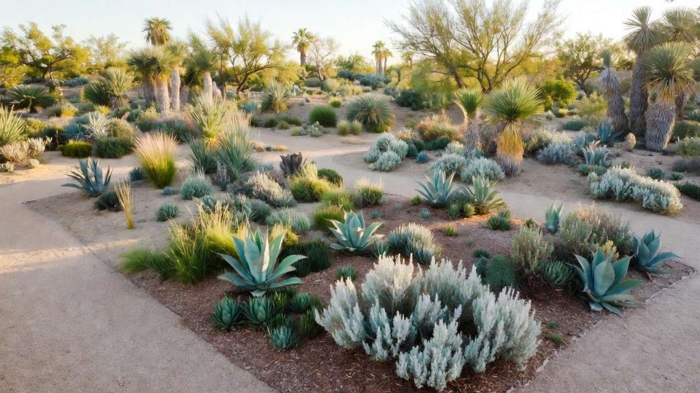
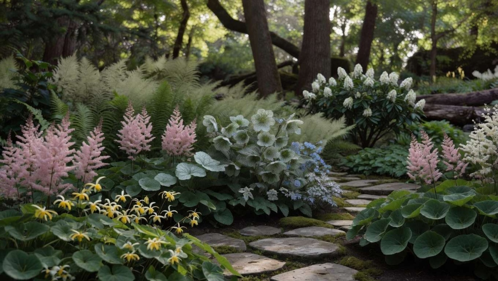
Plants for Every Habitat
Targeted ecological plant palettes formulated to solve specific landscape challenges and biodiversity goals.
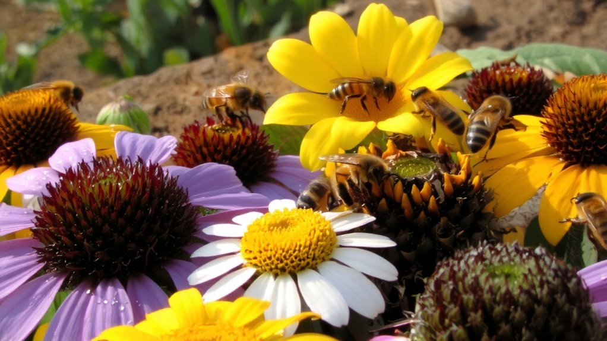
Keystone Nectar 01Pollinator Gardens & Corridors
Multi-season nectar bridges ensuring continuous pollen and nectar from early spring emergence to autumn pre-migration for native bees and butterflies.
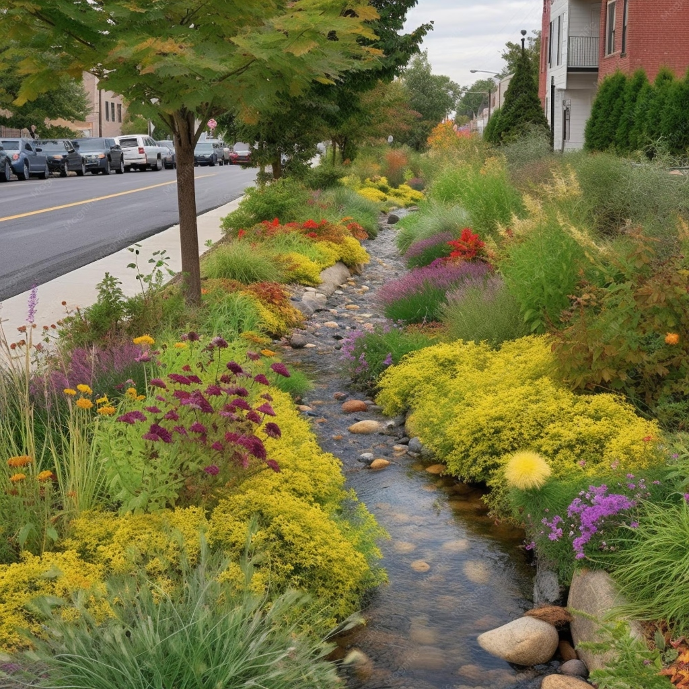
Hydric Adaptable 02Rain Gardens & Bioswales
Specially formulated plants with flexible root crowns that withstand both 48-hour torrential ponding and extended midsummer drought cycles.
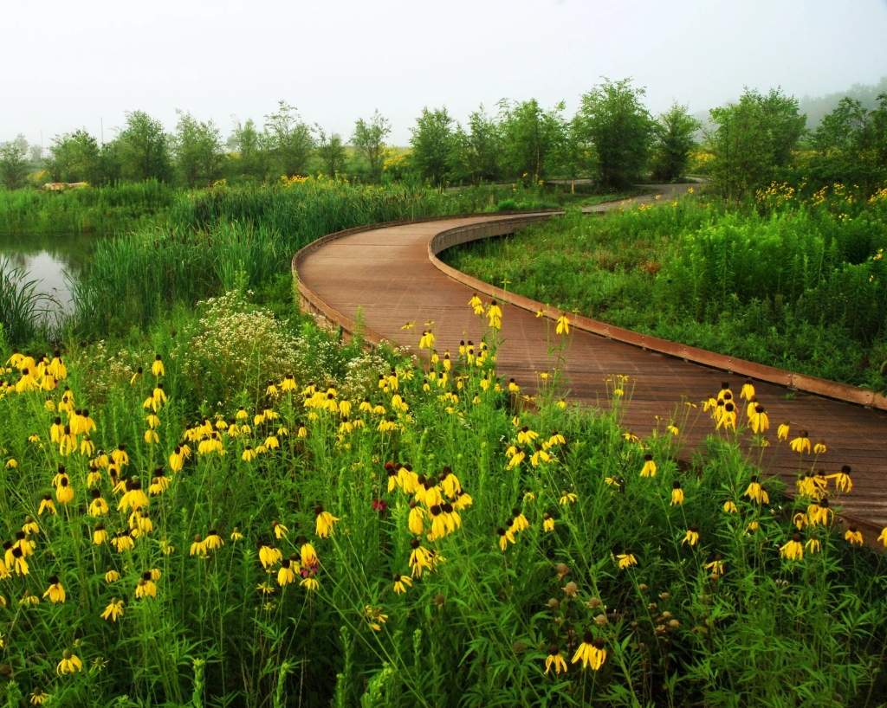
Zero-Mow Turf 03Native Meadows & Prairies
High-diversity matrices pairing 60% wildflowers with 40% non-aggressive native bunchgrasses to permanently exclude aggressive lawn weeds.
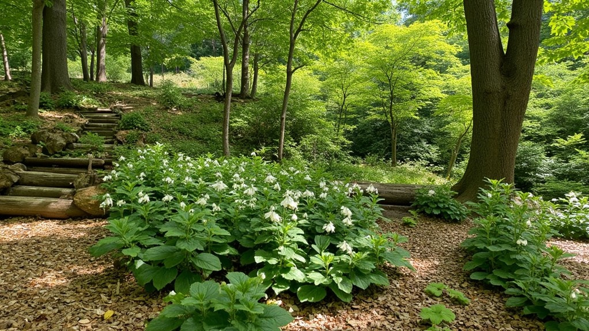
Understory Shield 04Woodland Edges & Hedgerows
Ecotone layers of native understory shrubs and architectural forbs providing vital nesting architecture, berry forage, and wind deflection.
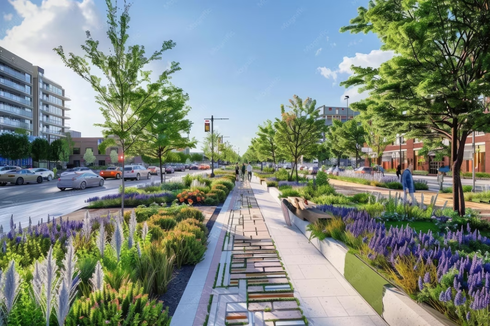
Bio-Connectivity 05Contiguous Wildlife Corridors
Connecting isolated islands of suburban habitat with unbroken bands of shelter, seed sources, and protective migration routes for native fauna.
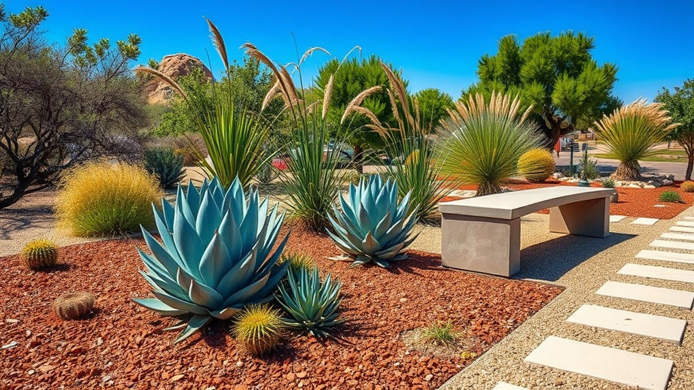
Xeric Resilient 06Low-Water & Drought Landscapes
Zero-irrigation plant communities once established, leveraging deep prairie taproots that thrive through scorching summer droughts without tap water.
Our 6-Step Restoration Process
How our restoration ecologists transform degraded land into self-regulating, thriving native communities.
Site Assessment & Baselines
High-precision topographic mapping, sunlight trajectory tracking, existing vegetation inventory, and historical disturbance diagnostics.
Eco-Topographic MapSoil & Hydrology Evaluation
Percolation testing, pH and compaction profiling, moisture retention analysis, and mycorrhizal fungal health assessment.
Soil Fungal ProfileNative Provenance Selection
Custom seed blend formulation and nursery plug selection strictly matching local bedrock, microclimates, and regional wildlife goals.
Certified Eco-Type SeedNon-Chemical Site Prep
Targeted organic solarization, stale seedbed germination cycles, and systematic eradication of aggressive non-native competitors.
Depleted Weed Seed BankPrecision Plant Installation
High-density installation of deep-cell nursery plugs, precision drill seeding, and organic erosion-control mulching for optimal rooting.
High-Density Plug MatrixAdaptive 3-Year Stewardship
Three-year ecological monitoring, high-mow weed canopy management, and supplemental enrichment planting for climax succession.
3-Year Monitoring ProtocolConservation Impact & Project Highlights
Explore tangible ecological achievements across our regional restoration sites.

Cedar Creek Wetland Corridor
Stabilized 2,400 linear feet of severely eroding agricultural stream banks using native dogwoods, sedges, and emergent aquatic vegetation.
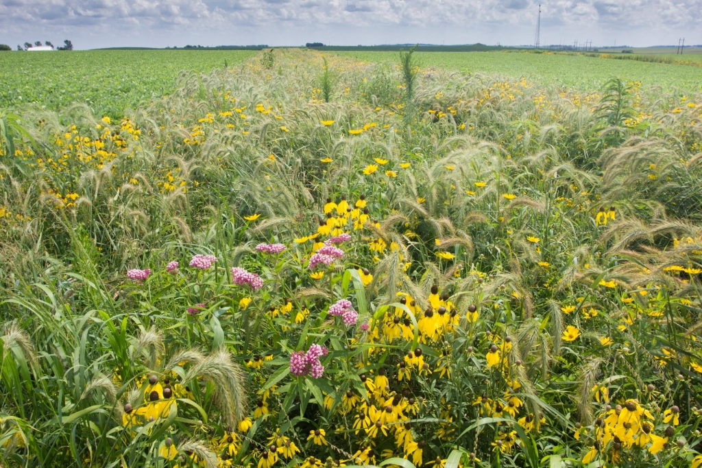
Pine Ridge Native Meadow
Replaced abandoned turf lawn with a thriving native tallgrass ecosystem harboring 42 regional wildflower species and vital wild bee nesting sites.